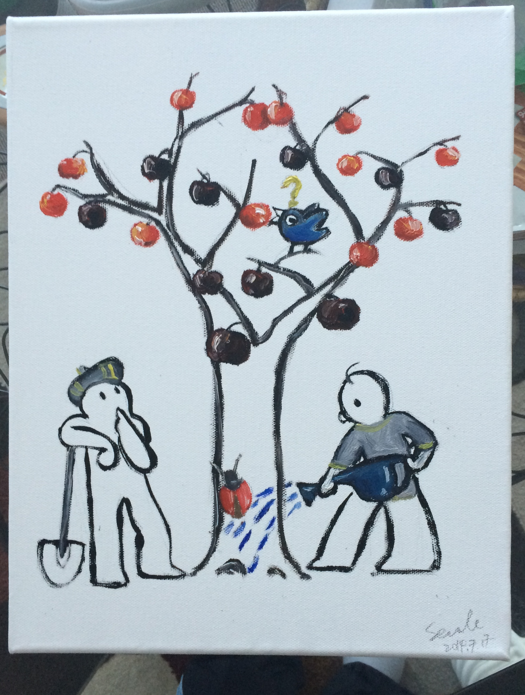

| INTERESTS | eHealth, Wearable Apps, Big Data in Health Care and Biomedical Researches | |
| WORK | Data Quality Analyst, SCIENCESCAPE, Toronto, Canada | 2015-now |
| EDUCATION | Ms. in Applied Computing, University of Toronto, Canada | 2015-now |
| Ph.D. in Biochemistry, Molecular and Cell Biology, Cornell University, USA | 2008-2014 | |
| B.Sc in Biological Sciences, Fudan University, China | 2004-2008 |
| CERTIFICATE |
{kind=link}
| ARTICLES |
| Sha H, Yang L, Liu M, Xia S, Liu F, Kersten S and Qi L (2014) Adipocyte Spliced Form of X-Box-Binding Protein 1 Promotes Adiponectin Multimerization and Systemic Glucose Homeostasis. Diabetes. 63(3):867-79. |
| Yang L, Sha H, Davisson R and Qi L (2013) Phenformin Activates UPR in an AMPK-dependent Manner. J Biol Chem. 288(19): 13631-8. |
| Ji Y, Sun S, Xia S, Yang L, Li X, Kersten S and Qi L (2012) Short-term High Fat Diet Challenge Promotes Alternative Macrophage Polarization in Adipose Tissue via Natural Killer T cells and Interleukin-4. J Biol Chem. 287(29): 24378-86. |
| Ji Y, Sun S, Xu A, Bhargava P, Yang L, Lam KS, Gao B, Lee CH, Kersten S and Qi L (2012) Activation of Natural Killer T Cells Promotes M2 Macrophage Polarization in Adipose Tissue and Improves Systemic Glucose Tolerance via Interleukin-4 (IL-4)/STAT6 Protein Signaling Axis in Obesity. J Biol Chem. 287(17): 13561-71. |
| Xia S, Sha H, Yang L, Ji Y, Ostrand-Rosenberg S and Qi, L (2011) Immature Myeloid Cells Suppress Inflammation and Promote Insulin Sensitivity During Obesity. J Biol Chem. 286: 23591-9. |
| Yang L, Xue Z, He Y, Sun S, Chen H and Qi L (2010) A Phos-tag-based Approach Reveals the Extent of Physiological Endoplasmic Reticulum Stress. PLoS ONE. 5: e11621. |
| Francisco A.B, Singh R, Li S, Vani A.K, Yang L, Munroe R.J, Qi L, Schimenti J.C and Long Q (2010) Deficiency of Sel1l in Mice Leads to Systemic ER Stress and Embryonic Lethality. J Biol Chem. 285: 13694-13703. |
| REVIEWS |
| Qi L, Yang L and Chen H (2011) Detecting and Quantitating Physiological Endoplasmic Reticulum Stress in Mammals. Meth Enzymol. 490: 137-46. |
| Sha H, He Y, Yang L and Qi L (2011) Stressed Out about Obesity: IRE1a-XBP1 in Metabolic Disorders. Trends Endocrinol Metab. 22(9): 374-81. |
| He Y, Sun S, Sha H, Liu Z, Yang L, Xue Z, Chen H and Qi L (2010) Emerging Roles of XBP1, a sUPeR Transcription Factor. Gene Expression.15: 12-25. |
| 2015-2016 | Ontario Centres of Excellence TalentEdge Fellowship - Toronto, ON, Canada |
| 2012-2013 | Founders Affiliate Predoctoral Fellowship - American Heart Association, USA |
| 2008-2009 | Stip Olin Fellowship - Cornell University, Ithaca, NY, USA |
| 2007 | Suntory International Scholarship, First Prize - Shanghai Educational Development Foundation, Shanghai, China |
| 2006 | FosunPharma Scholarship, First Prize - Fudan University, Shanghai, China |
| 2005 | Thermo Electron Corporation Scholarship, First Prize - Fudan University, Shanghai, China |
| 2005 | Hope Project-Kerry Oils and Crains Honor Students Scholarship, First Prize - Fudan University, Shanghai, China |
| 2005-2007 | The People’s Scholarship, First Prize - Fudan University, Shanghai, China |
| TakeABreak(android) - a repeating interval alarm timer Download |
| language: Java |
| compatibility: Android 2.2 APIs and above |
| Motivation: I always forget time while sitting in front of the computer. Therefore, I developed this mobile app to remind people like me to move around periodically, for better protection of their necks. It may also be used as an interval timer for biological experiments, which require repeated procedures. |
| The android.os.CountDownTimer is the core of the repeating timer. Two UIs are provided for android phones before and after Android 3.0(HONYCOMB) for compatibility. The app binds to mobile's notification ringtone. To change alarm sound, edit notification alarm in the phone's sound setting. |
| TakeABreak(desktop) - a repeating interval alarm timer Download |
| language: Java |
| Motivation: This is for desktop use. |
| The timer is implemented via javax.swing.Timer. UI is based on javax.swing. The javax.sound.sampled.AudioSystem and javax.sound.sampled.Clip are used to play embedded ringtone. Timer interval can be entered by either direct typing or by clicking add/sub buttons. |
| AutoClicker(desktop) - a desktop auto-clicking tool Download |
| language: Java |
| Motivation: To keep my Clash of Clans account online, I developed this simple auto-clicker. The auto-clicker keeps clicking the indicated pixel on the screen, and returns to the mouse's current working position. |
| Change of clicking period and position is thread-safe and can be performed anytime. |
| www.warlord.club - an app sales website |
| language: Java, SQL, HTML, CSS |
| Motivation: A Servlets/JSP-based website used for advertisement and user registration. |
I am a sketching & painting lover.



| Email： | liuyang@cs.toronto.edu |